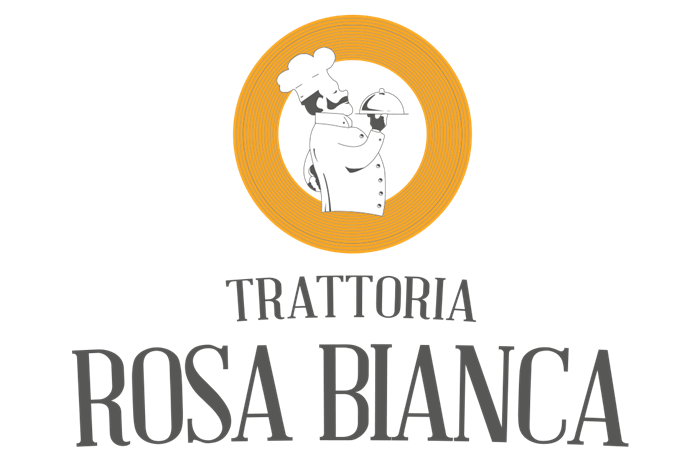
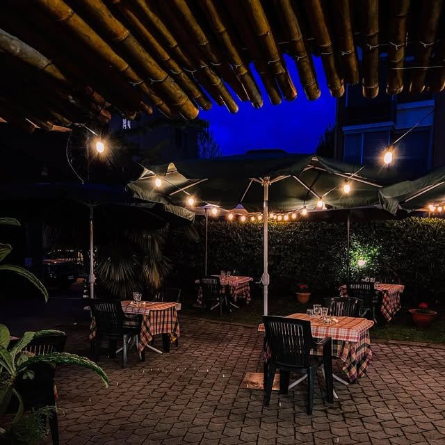

Ciao bellissimi!Si mangia come a casa.
A pochi passi dal centro di Pinerolo, piatti della tradizione piemontese e italiana cucinati con passione. Da più di cinquant'anni la nostra casa, e la vostra.
★★★★★ 4,6 su Google · oltre 1.600 recensioniIl menù del giorno
Ogni giorno un menù diverso. Scegli il tuo primo, il secondo e il contorno sul blocchetto: te lo prepariamo da mangiare qui o da portare via.
+ contorno e pane
+ contorno e pane
Il menù della sera
Menù completo a 19 €: primo a scelta, secondo a scelta, contorno e pane.
Tagliolini al salmone
Ravioli al ragù
Ravioli in salsa di noci
Penne all'arrabbiata
Mezze maniche salsiccia, rucola e ricotta
Gnocchi ai quattro formaggi
Minestra del giorno
SECONDIArrosto al forno
Milanese
Petto di pollo ai ferri
Braciola di maiale ai ferri
Fettina di vitello ai ferri
Salsiccia ai ferri
Scamorza alla piastra
La carta dei vini
Langhe, Monferrato e le colline di casa nostra, con qualche bollicina per le occasioni.
Si mangia sotto il pergolato
Tavoli all'aperto tra l'uva e le lucine, seggioloni per i più piccoli e cani benvenuti.

Da più di cinquant'anni questa trattoria è la nostra casa, e un po' anche la vostra. Grazie per il calore, l'affetto e la vicinanza che ci dimostrate ogni giorno.
Un abbraccio, Silvana, Marco e Alessandro
Vieni a trovarci
Apri in Maps
pranzo 12:00 – 15:00 · cena 18:30 – 22:15
Sabato e domenica chiuso